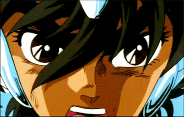

Da mesma forma que o mestre precisa existir no mundo como um narrador, o jogador precisa existir no mundo por meio de um avatar, um personagem. Mas como equilibrar até onde você vai? Como saber até onde o que você precisa fazer é realmente possível? Você não é o ser mais fraco existente, mas também não é o mais poderoso. A ficha de personagem serve justamente para te orientar no que você é bom, ruim, mediano, pontuar o que você pode ou não fazer com as habilidades que você tem e a combinação das habilidades múltiplas dadas a você pelo seu duro sacrifício em treinamento.
Todo personagem tem um arquétipo, seja bom, ruim, agradável ou não, e isso define em que você focou sua vida, em que você focou sua juventude, você foi um antissocial que comia livros no café da manhã? ou uma líder de torcida que precisa sempre ser linda e perfeita pra agradar os que estão próximos a você?
|
Inspiração. Enquanto seus amigos estiverem escutando suas palavras de apoio, eles se enchem de esperança e recebem 1d4(por nível de habilidade) a mais em rolagens de qualquer tipo. |
|
foco de luta: Consegue furar a esquiva e acertar diretamente na defesa, perdendo 5 (menos 1 a cada nível de habilidade) no dado de acerto. |
|
Inventor: consegue criar itens mágicos e tecnológicos, consegue entender itens e guardar suas arquiteturas consigo para reproduzir seus efeitos em um equipamento mágico ou tecnológico. Pode guardar 2 efeitos (mais 1 pra cada nível de habilidade), pode colocar um efeito em um item (mais um para cada nível de habilidade). |
|
Súditos: tem vantagem em testes de carisma e pode montar equipes de ajudantes para manter consigo, você pode controlar equipes de 2 criaturas (mais 1 para cada nível de habilidade), que tiverem mais que 1 de inteligência e forem submissas a você, para servirem como seus escudeiros. |
|
Teimosia: não pode ser enfeitiçado, amedrontado, controlado e tem vantagem em testes de morte e de resistência, também recebe mais 1 de defesa extra por nível(mais 1 por nível de habilidade). |
|
Bem Aventurado: Recebe o dobro do modificador de proficiência em 1 atributo ( mais 1 por nível de habilidade) a escolha, além disso, ganha metade da proficiência em todas as habilidades que não for proficiente. |
|
Fúria animal: Torna o usuário mais forte (uma vez por batalha) conseguindo mais 2 de dano em armaduras ou mais 1 de dano na vida, uma vez por dia (mais 1 vez por nível de habilidade), além disso, recebe uma das seguintes habilidades animais em área, sendo o raio de alcance 1,5 metros (mais 1,5 por nível de habilidade):
|
O destino é como um plano paralelo, similar a um deserto em escuridão total com pequenos pontos marcados no chão chamados de eventos, os quais foram decididos no momento em que você nasceu, mas esses pontos não são todos certeiros, alguns desaparecem se você pisar em outros, alguns aparecem depois que você pisa em outros, e alguns te puxam para perto deles de uma forma que é impossível escapar. Alguns pontos do destino podem fazer com que todo o mapa, do plano do destino simplesmente mude, alguns dos pontos obrigatórios simplesmente desaparecem, outros, aparecem do nada, partes da sua história são tão enterradas que nem fazem mais parte da sua personalidade, esses pontos de mudança brutal são chamados de sina e ocorrem quando um humano comum tem seu primeiro contato com a feitiçaria ou a magia.
O contato inicial com a feitiçaria ou a magia pode ser feito de diversas formas diferentes, cada forma impactando seu Destino de uma forma diferente. A forma como aconteceu seu contato primário com a magia te mostra como você vai prosseguir sua jornada em um mundo com magia.
O Despertar do Poder
Há muito mais entre os mundos do que os olhos humanos podem perceber. Os feiticeiros, seres cujas almas pulsam com
energia ancestral, são os intermediários entre o visível e o invisível. Eles não escolhem a magia; ela os escolhe.
O poder flui em suas veias desde tempos imemoriais, como um rio subterrâneo que finalmente emerge à superfície. O
primeiro contato com a magia é sempre um momento de revelação: um sussurro do desconhecido, um vislumbre do
sobrenatural. Alguns dizem que os feiticeiros veem fantasmas antes mesmo de entenderem o que são. Esses encontros
sutis, como fios de prata entre os mundos, marcam o início de sua jornada.
Aliados e Desafios
Os feiticeiros não caminham sozinhos. Quando a magia se manifesta, outros já estão à espreita. Um feiticeiro novato
pode ser ajudado por um mentor mais experiente, alguém que já trilhou os caminhos tortuosos da feitiçaria. Esses
encontros são cruciais: um feiticeiro forte pode abrir portais, proteger contra criaturas sombrias e ensinar os
segredos das palavras de poder. No entanto, nem todos os aliados são benevolentes. Onis, yokais e outras entidades
espreitam nas sombras, testando a coragem dos novatos. Sobreviver a um ataque dessas criaturas é mais do que uma
mera vitória; é uma prova de resiliência e determinação. As cicatrizes deixadas por garras afiadas ou olhares
ameaçadores se tornam marcas de honra, símbolos de que o feiticeiro enfrentou o desconhecido e emergiu vitorioso.
Aqueles que sobrevivem a esses embates carregam consigo uma sabedoria sombria, um conhecimento que não pode ser
encontrado nos livros ou nas salas de estudo. Eles aprenderam a ler os sinais do mundo oculto, a distinguir entre
ameaça e oportunidade.
A Arte da Magia
Estudar a magia é como desvendar um pergaminho antigo. Os feiticeiros mergulham em grimórios empoeirados, decifram
símbolos e selos, e aprendem a manipular a força de suas almas. Alguns preferem a abordagem direta, lançando
feitiços com energia bruta, como raios de luz disparados do coração. Outros preferem a sutileza, inscrevendo
símbolos em pergaminhos e selando pactos com entidades elementares. A magia é uma dança entre o conhecido e o
desconhecido, entre o fogo e a água, entre a vontade e a realidade. Os feiticeiros, com suas capas escuras e olhos
faiscantes, são os guardiões dessa dança, equilibrando-se na corda bamba entre os mundos.
O Pacto Inevitável
Os yokais, criaturas que dançam na fronteira entre o humano e o mágico, não escolhem seu destino; ele é traçado por
um pacto irrevogável. Quando um ser mortal se une a uma entidade mística, algo profundo acontece. A personalidade
do hospedeiro e a essência do yokai se entrelaçam, apagando as linhas que os separavam. O que emerge desse abraço
de sombras e luz é um novo ser, carregando as memórias de ambos. O corpo, agora híbrido, pulsa com uma energia
ancestral, e os olhos refletem séculos de sabedoria e mistério.
A Sinfonia da Dualidade
A fusão não é apenas uma união de almas; é também uma sinfonia da dualidade. O yokai e o hospedeiro dançam em
compassos complexos, alternando entre notas humanas e acordes mágicos. O que antes era singular agora é plural: dois
passados, duas identidades, duas formas de ver o mundo. O yokai traz consigo não apenas suas habilidades, mas também
suas lembranças de florestas antigas, de luas cheias e de segredos sussurrados pelo vento. O hospedeiro, por sua vez,
traz as marcas da vida humana: amores perdidos, risadas compartilhadas e sonhos quebrados. Essa sinfonia é tocada em
um instrumento único, cujas cordas vibram com a tensão entre o que foi e o que será.
Da Monstruosidade à Normalidade
No início, a fusão é grotesca. O corpo retorce-se, pele e escamas se misturando, olhos brilhando com fogo e medo. Os
aldeões sussurram sobre abominações e maldições. Mas o tempo é um aliado. À medida que os níveis passam, o corpo se
acalma. O yokai e o hospedeiro encontram um equilíbrio, e a monstruosidade cede espaço à normalidade. Alguns yokais se
tornam mais humanos, com traços de compaixão e empatia. Outros mergulham mais fundo no mágico, seus olhos brilhando como
estrelas. As transformações variam: alguns desenvolvem garras afiadas, outros olhos hipnotizantes, e alguns ainda adquirem
asas, permitindo-lhes voar entre os mundos. O processo é imprevisível, mas todos os yokais compartilham uma verdade: eles
são testemunhas da dança entre mundos, e suas histórias são escritas nas cicatrizes e nas peculiaridades de sua nova forma.
O Juramento Ancestral
Os protegidos, seres que habitam a fronteira entre o mundano e o mágico, são herdeiros de pactos antigos. Diferentemente
dos feiticeiros, cujo poder flui naturalmente, os protegidos têm sua magia entrelaçada com o destino do passado herdado de
suas famílias. O pacto que ligou seu destino com a magia foi foito antes mesmo de seu nascimento, um juramento
ancestral: quando um ser mágico se sente em dívida com um humano, ele pode escolher vincular sua essência à linhagem daquele
protetor. Esse pacto transcende o tempo e as gerações, selando um compromisso que ecoará por séculos. Assim, os protegidos
nascem com uma herança mágica, uma promessa inscrita em suas almas e corações.
Estrategistas e Guardiões
Os protegidos não são meros espectadores dessa aliança. Eles são treinados para serem estrategistas, observadores atentos
das sombras e das estrelas. Suas habilidades mágicas se assimilam a feitiçaria; eles aprendem a ler os sinais do mundo, a
decifrar os murmúrios do vento e a antecipar os movimentos dos inimigos. Cada protegido é um xadrezista, movendo-se com
precisão no tabuleiro da vida. Eles estudam grimórios e magias, absorvendo conhecimentos que vão além das palavras escritas.
A magia flui em seus ossos, mas também em seus destinos, seus combates mágicos e, em suas escolhas de quando atacar e quando
se esconder.
A Dança das Habilidades
A verdadeira força dos protegidos reside na fusão de habilidades. Eles não apenas herdam os dons mágicos de seus protetores,
mas também unem essas habilidades às suas próprias aptidões humanas. Um protegido pode combinar a destreza com a espada de
seu ancestral com a capacidade de lançar chamas ou curar feridas. Essa dança entre o antigo e o novo cria uma sinergia única.
Alguns protegidos desenvolvem asas, permitindo-lhes voar como os ventos que sussurram segredos. Outros ganham olhos que veem
além do visível, enxergando as tramas invisíveis do destino. Eles são os guardiões das linhagens, os portadores de uma herança
que transcende o sangue e se torna magia.
O Despertar da Magia
Os magos são seres que tiveram sua primeira experiencia com magia muito cedo e foram treinados para controlar a magia por símbolos,
selos, gestos, palavras e tudo que pode guardar magia e se ativar, como amuletos, itens mágicos e desenhos. Geralmente os Magos são
também construtores, engenheiros, artesãos, ferreiros, etc. Mas não é necessário se prender nessa caracteristica, existem muitas
personalidades de mago.
A Linguagem dos Artefatos Híbridos
Os símbolos continuam sendo sua linguagem secreta, mas agora eles se manifestam em objetos tecnológicos. Os magos tecnológicos
inscrevem runas digitais em painéis de controle, traçam círculos de proteção com feixes de laser e desenham estrelas em telas
sensíveis ao toque. Cada símbolo carrega uma história: um selo que protege um firewall, uma espiral que otimiza um algoritmo de
inteligência artificial, um triângulo que conecta servidores quânticos. E os gestos? Bem, agora eles são movimentos de mãos sobre
hologramas, como maestros conduzindo uma sinfonia de realidades paralelas. E as palavras… ah, as palavras. Elas são comandos que
ativam sistemas, senhas que abrem portas virtuais. Os magos tecnológicos sussurram encantamentos em linguagens de programação e em
dialetos antigos, e o mundo responde.
Além do Laboratório, na Oficina e no Céu Virtual
Os magos tecnológicos não se limitam aos laboratórios; eles são também artesãos das possibilidades. Suas oficinas são verdadeiros
santuários, onde engrenagens de bronze se entrelaçam com circuitos impressos e cristais luminescentes. Eles veem a magia em tudo:
nas dobradiças de uma prancha voadora, nas trilhas de luz de um holograma e nos restos de autômatos antigos que guardam segredos
codificados. Cada invenção é um ato de equilíbrio, uma dança entre o analógico e o digital. E, embora alguns magos tecnológicos
prefiram a solidão de suas oficinas, outros se conectam em redes virtuais, compartilhando hacks e desvendando enigmas em fóruns
clandestinos. Suas personalidades variam: alguns são pragmáticos, outros visionários, e alguns até mesmo um pouco excêntricos. Mas
todos têm uma coisa em comum: a paixão por unir o antigo e o novo, o místico e o cibernético.
A Ligação Intuitiva
Os invocadores são seres cuja essência está profundamente entrelaçada com o ato de chamar e comandar. Desde cedo, eles demonstram
uma habilidade intuitiva para invocar objetos e criaturas, como se tivessem uma conexão natural com outras dimensões. Em combate,
raramente estão sozinhos; preferem lutar em grupo, mas quando necessário, criam seu próprio exército. Eles buscam aliados mais
poderosos fisicamente para equilibrar suas chances, invocando criaturas majestosas e animais de grande porte que lutam ao seu lado.
Essa ligação íntima com seres invocados é o que define sua existência e estratégia.
A Arte da Invocação
A habilidade dos invocadores vai além de simplesmente chamar criaturas para a batalha. Eles são mestres em conceder vantagens aos
aliados, fortalecendo-os com energia mágica e proteção. Em momentos de necessidade, podem invocar alimento e bebida para sustentar
seus companheiros, ou objetos e selos mágicos para criar barreiras e armadilhas. A versatilidade dos invocadores é impressionante:
eles podem abrir portais para escapar de situações perigosas ou trazer magias poderosas para virar o jogo a seu favor. Cada invocação
é um ato de equilíbrio, uma dança entre o poder bruto e a estratégia cuidadosa.
Companheiros e Criaturas
Os invocadores têm uma conexão especial com as criaturas que chamam. Animais de grande porte, como lobos gigantes, águias majestosas
e dragões, são frequentemente seus companheiros mais leais. Essas criaturas não são apenas ferramentas de combate, mas também amigos
e guardiões. A relação entre o invocador e suas invocações é simbiótica; ambos se fortalecem mutuamente. Além dos seres vivos, os
invocadores podem trazer à existência objetos encantados, como espadas flamejantes, escudos impenetráveis e amuletos de proteção.
Cada invocação é uma extensão de sua vontade, uma manifestação tangível de seu poder interior.
A Descoberta da Arte Mágica
Os bardos, artistas por natureza, descobriram que a arte e a magia são duas faces da mesma moeda. A música, a dança, a poesia e a
pintura não são apenas formas de expressão, mas também canais poderosos para a magia. Essa descoberta levou à criação da fundação dos
bardos, onde a arte e a magia se entrelaçam de maneira harmoniosa. No entanto, os métodos dos bardos eram vistos como espalhafatosos
e pomposos demais pelas escolas de magia convencionais, que preferiam abordagens mais discretas e formais.
A Fundação dos Bardos
Rejeitados pelas instituições tradicionais, os bardos decidiram criar sua própria escola, onde poderiam explorar e desenvolver suas
habilidades sem restrições. A Escola dos Bardos tornou-se um refúgio para aqueles que viam a magia como uma performance, uma arte a
ser celebrada. Aqui, os bardos podiam ser livres para experimentar, inovar e brilhar. Suas apresentações mágicas eram espetáculos de
luz e som, encantando e inspirando todos ao seu redor.
A Reconciliação das Escolas
Com o tempo, a escola clássica de magia começou a perceber o valor e o poder dos bardos. As habilidades únicas dos bardos em
combinar arte e magia os tornavam aliados formidáveis. Reconhecendo seu erro, a escola clássica estendeu a mão aos bardos, propondo uma
aliança. Mas os bardos, agora cientes de seu próprio valor, não estavam dispostos a simplesmente se submeter. Em vez disso, as duas
escolas se tornaram irmãs, estabelecendo novas sedes lado a lado. Essa união trouxe novas oportunidades, mas também desafios. Os alunos
das duas escolas precisavam aprender a aceitar e respeitar suas diferenças, encontrando um equilíbrio entre a tradição e a inovação.
A Força do Corpo e da Magia
Os guerreiros são os pilares da força bruta em qualquer grupo de combate. Eles se destacam no combate corpo a corpo, utilizando técnicas
de aprimoramento corporal e encantamentos em seus equipamentos para obter vantagens sobre seus oponentes. A magia não é apenas um
complemento, mas uma extensão de suas habilidades físicas, permitindo-lhes superar limites humanos e enfrentar desafios formidáveis. Cada
guerreiro é uma fortaleza ambulante, combinando destreza, força e magia em um só ser.
Diversidade de Estilos
A versatilidade é uma marca registrada dos guerreiros, que se especializam em diferentes estilos de combate para atender às necessidades
da guerra. Os cavaleiros, por exemplo, são guerreiros que lutam montados em poderosas criaturas, utilizando a velocidade e a força de
suas montarias para dominar o campo de batalha. Os mestres de batalha são estrategistas natos, adaptando suas táticas conforme a situação
exige, sempre um passo à frente do inimigo. Os guerreiros arcanos, por outro lado, combinam magia e combate físico, lançando feitiços
enquanto brandem suas espadas. E então há os bárbaros, que canalizam sua ira em força bruta, transformando seus corpos em verdadeiras
armaduras vivas e adotando um estilo de luta primitivo e bestial.
A Essência do Guerreiro
Apesar das diferenças em estilos e técnicas, todos os guerreiros compartilham um objetivo comum: a busca incessante pela perfeição no
combate. Eles treinam incansavelmente, aprimorando suas habilidades e fortalecendo seus corpos e mentes. Seja através da disciplina
rígida dos cavaleiros, da astúcia dos mestres de batalha, da fusão mágica dos guerreiros arcanos ou da fúria indomável dos bárbaros,
cada guerreiro encontra seu próprio caminho para a excelência. Eles são os guardiões da batalha, os protetores de seus aliados e os
terror dos seus inimigos.
Os Mestres das Sombras
Sempre à espreita, com olhos brilhantes na escuridão, os ladinos são mestres da furtividade e do subterfúgio. Dizem que onde há sombra,
há também um ladino. Esses lutadores preferem evitar confrontos diretos, utilizando sua astúcia e habilidades para resolver situações
sem derramamento de sangue. Embora seu comportamento seja frequentemente visto como covardia, os ladinos sabem que a verdadeira vitória
é aquela alcançada sem luta. Eles são os fantasmas dos campos de batalha, movendo-se silenciosamente e atacando apenas quando necessário.
Honra Entre Trapaceiros
Apesar de serem conhecidos como trapaceiros, ladrões e assassinos, os ladinos possuem um código de honra próprio. Eles podem parecer
ameaçadores e indiferentes, mas muitas vezes demonstram um profundo senso de lealdade e compaixão. Há histórias épicas de ladinos que
abandonaram grandes tesouros para voltar e ajudar aqueles que os apoiaram em momentos de necessidade. São um grupo de pessoas que se
tratam como família, como irmãos, como pais, mães filhos. Eles tendem a proteger mais quem eles consideram família, cuidam dos seus,
mas geralmente não dariam as suas vidas pelos outros. Essa dualidade entre a aparência fria e os abraços calorosos é o que torna os
ladinos tão enigmáticos e fascinantes.
A Cultura dos Ladinos
Pouco se sabe sobre a verdadeira cultura dos ladinos, pois eles preferem manter seus segredos bem guardados. Eles vivem nas sombras,
operando nas margens da sociedade e evitando a atenção desnecessária. Quando aparecem, tentam parecer mais ameaçadores e neutros,
mas suas ações muitas vezes revelam um lado mais humano. Os ladinos são sobreviventes, adaptando-se a qualquer situação e utilizando
qualquer recurso disponível para alcançar seus objetivos. Eles são os mestres da improvisação, sempre um passo à frente de seus
adversários.